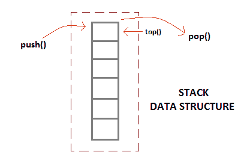

使用链表实现栈
原文：https://www.studytonight.com/data-structures/stack-using-linked-list
我们所知道的栈是一种后进先出(LIFO) 数据结构。它具有以下操作:
- 推入:将元素推入栈
- 弹出:移除最后添加的元素
- top: 返回栈顶部的元素

使用链表实现栈
使用链表可以很容易地实现栈。栈是一种数据结构，可以使用push()方法向其中添加数据，也可以使用pop()方法从其中移除数据。有了链表，推操作可以用链表的addAtFront()方法代替，弹出操作可以用删除链表前节点的函数代替。
通过这种方式，我们的链表将虚拟地变成一个具有push()和pop()方法的栈。
首先我们创建一个类节点。这是我们的链表节点类，其中将有数据和一个节点指针来存储下一个节点元素的地址。
class node
{
int data;
node *next;
};
然后我们定义栈类，
class Stack
{
node *front; // points to the head of list
public:
Stack()
{
front = NULL;
}
// push method to add data element
void push(int);
// pop method to remove data element
void pop();
// top method to return top data element
int top();
};
在栈中插入数据(链表)
为了将一个元素插入到栈中，我们将创建一个节点并将其放在列表的前面。
void Stack :: push(int d)
{
// creating a new node
node *temp;
temp = new node();
// setting data to it
temp->data = d;
// add the node in front of list
if(front == NULL)
{
temp->next = NULL;
}
else
{
temp->next = front;
}
front = temp;
}
现在，每当我们调用push()函数时，一个新的节点就会被添加到前面的列表中，这就是栈的行为。
从栈中移除元素(链接列表)
为了做到这一点，我们将简单地删除第一个节点，并使第二个节点成为列表的头部。
void Stack :: pop()
{
// if empty
if(front == NULL)
cout << "UNDERFLOW\n";
// delete the first element
else
{
node *temp = front;
front = front->next;
delete(temp);
}
}
返回栈顶部(链表)
在这种情况下，我们只需返回存储在列表头部的数据。
int Stack :: top()
{
return front->data;
}
结论
当我们说“使用链表实现栈”时，我们指的是如何让链表表现得像一个栈，毕竟它们都是逻辑实体。所以任何数据结构作为一个 Stack，都应该有push()方法在顶部添加数据，有pop()方法从顶部移除数据。这正是我们所做的，并因此实现了使链表表现为栈。